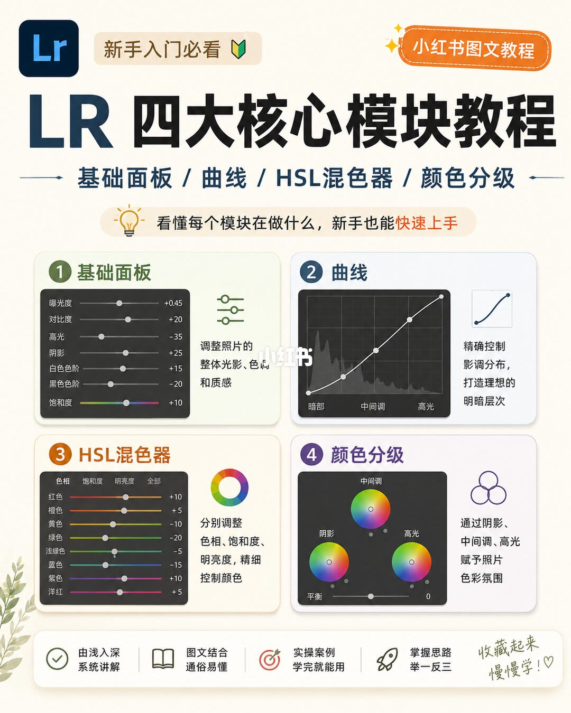
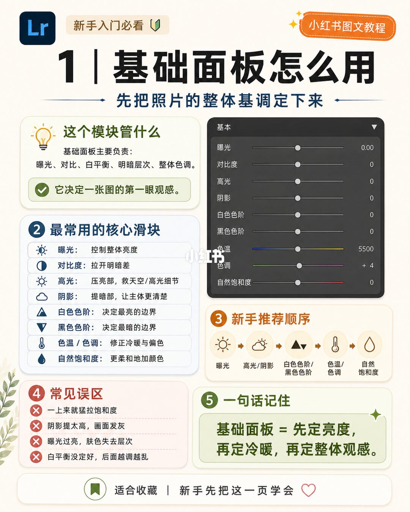
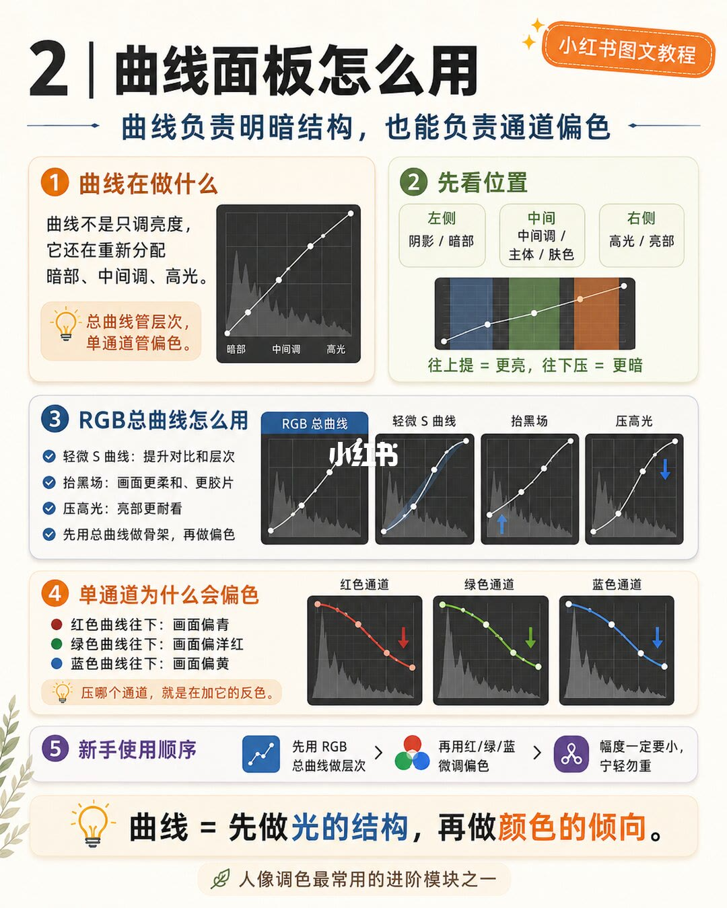
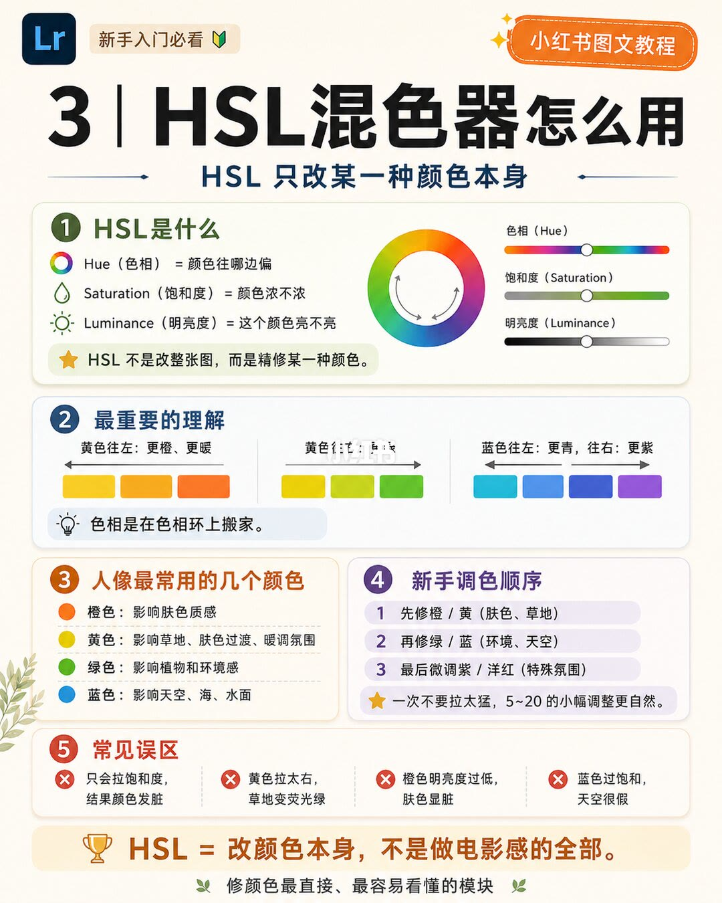
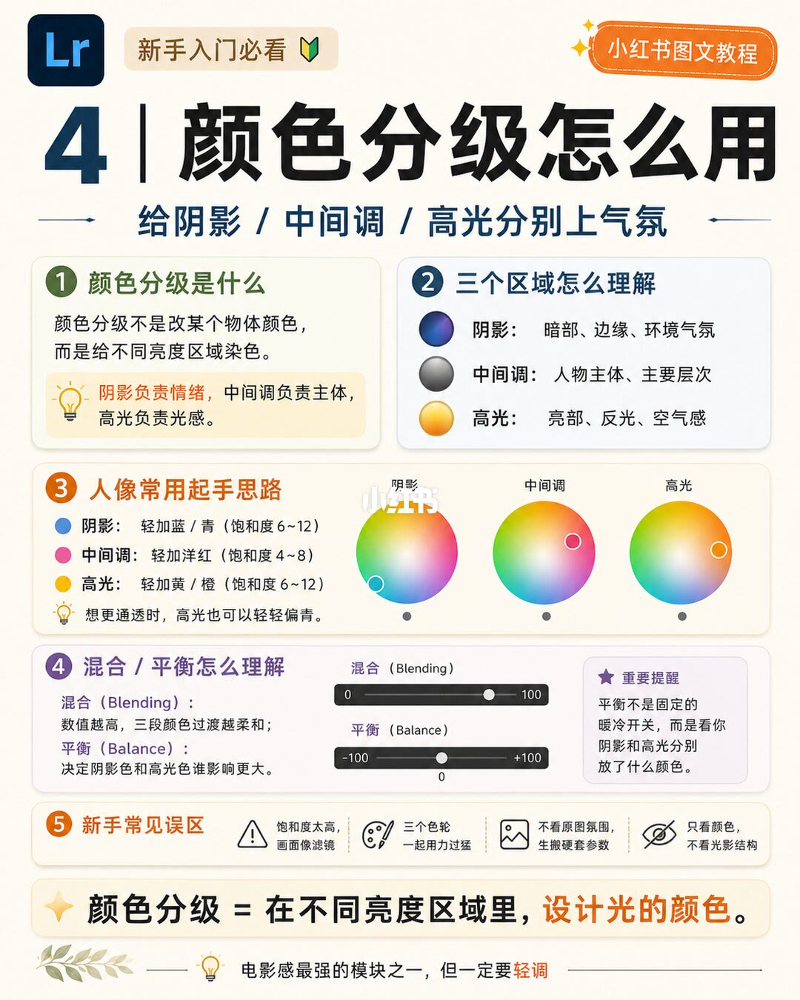

图文实录 · 小红书 · 敖舜
从拍摄到调色：LR/达芬奇
标题把拍摄接到调色，并并列写了 LR 和达芬奇。这五页实际只画了 Lightroom：第 1 页总览四个模块，后四页分别讲基础面板、曲线、HSL 混色器和颜色分级。图上没有达芬奇界面。
1/5
四个模块各管一件事
左上是 Lr 标。大标题「LR 四大核心模块教程」。副标题一行：基础面板 / 曲线 / HSL混色器 / 颜色分级。下面写看懂每个模块在做什么，新手也能快速上手。右上角徽章是「小红书图文教程」。四格示意面板，旁边各有一句职责。
| 格 | 图上写的职责 | 示意界面上能读到的数 |
|---|---|---|
| 1 基础面板 | 调整照片的整体光影、色彩和质感 | 曝光度 +0.45，对比度 +20，高光 −35，阴影 +25，白色色阶 +15，黑色色阶 −20，饱和度 +10 |
| 2 曲线 | 精确控制影调分布，打造理想的明暗层次 | 横轴标了暗部、中间调、高光。曲线上有点，没有读数 |
| 3 HSL混色器 | 分别调整色相、饱和度、明亮度，精细控制颜色 | 停在「色相」页：红 +10，橙 +5，黄 −10，绿 −20，浅绿 −5，蓝 −15，紫 +10，洋红 +5 |
| 4 颜色分级 | 通过阴影、中间调、高光赋予照片色彩氛围 | 三个色轮的点都在中心。平衡标着 0 |
页脚四句：由浅入深、系统讲解；图文结合、通俗易懂；实操案例、学完就能用；掌握思路、举一反三。右下角手写「收藏起来 慢慢学」。这一页的滑块是示意面板上的样例，后四页没有把同一组数再当作步骤。

2/5
基础面板：先定第一眼
标题「1 | 基础面板怎么用」，副标题「先把照片的整体基调定下来」。第一节写基础面板主要负责曝光、对比、白平衡、明暗层次、整体色调，并写它决定一张图的第一眼观感。旁边「基本」面板几乎都是 0：曝光 0.00，对比度、高光、阴影、白色色阶、黑色色阶、自然饱和度都是 0；色温 5500；色调 +4。
第二节列最常用滑块：曝光控制整体亮度；对比度拉开明暗差；高光压亮部，救天空和高光细节；阴影提暗部，让主体更清楚；白色色阶决定最亮的边界；黑色色阶决定最暗的边界；色温 / 色调修正冷暖与偏色；自然饱和度更柔和地加颜色。
第三节新手顺序从左到右：曝光 → 高光/阴影 → 白色色阶/黑色色阶 → 色温/色调 → 自然饱和度。第四节常见误区四条：一上来就猛拉饱和度；阴影提太高，画面发灰；曝光过度，肤色丢层次；白平衡没定准，后面越调越乱。第五节一句话：基础面板 = 先定亮度，再定冷暖，再定整体观感。绿条页脚：适合收藏，新手先把这一页学会。

3/5
曲线：先立光的结构
标题「2 | 曲线面板怎么用」。副标题写曲线负责明暗结构，也可以管通道偏色。第一节：曲线不只是调亮度，而是重新分配暗部、中间调、高光。提示：总曲线管层次，单通道管偏色。图是一条斜线和直方图，下面标暗部、中间调、高光。
第二节先看位置。左段是暗部、暗的地方；中段是中间调、主体、肤色；右段是高光、亮的地方。规则写成往上提更亮，往下压更暗。没有数值。
第三节 RGB 总曲线四步：轻微 S 曲线，提升对比和层次；抬黑场，画面更柔和、更胶片；压高光，亮部更耐看；先用总曲线做骨架，再做偏色。四张小图分别是直线、轻微 S、左下点上提、右上点下压，没有刻度。
第四节单通道：红曲线往下，画面偏青；绿曲线往下，画面偏品红；蓝曲线往下，画面偏黄。提示写压低一个通道，等于在加它的互补色。第五节新手顺序三步：先用 RGB 总曲线做层次；再用红、绿、蓝做轻微偏色；幅度要小，宁轻勿重。页底一句话：曲线 = 先立光的结构，再立颜色倾向。旁注这是人像调色最常见的进阶模块之一。

4/5
HSL：只改某一种颜色
标题「3 | HSL混色器怎么用」，副标题「HSL 只改某一种颜色本身」。左上仍是 Lr 标和「新手入门必看」。第一节把三项拆开：色相是颜色往哪边偏；饱和度是颜色浓不浓；明亮度是这个颜色亮不亮。旁边有色环，以及色相、饱和度、明亮度三条中点示意条，没有读数。星标写：HSL 不是改整张图，而是精修某一种颜色。
第二节讲色相搬家。黄往左更橙、更暖，往右更绿；蓝往左更青，往右更紫。提示：色相是在色相环上搬家。
第三节人像常用色：橙色影响肤色质感；黄色影响草地、肤色过渡、暖调氛围；绿色影响植物和环境感；蓝色影响天空、海、水面。第四节顺序：先修橙 / 黄（肤色、草地）；再修绿 / 蓝（环境、天空）；最后微调紫 / 洋红（特殊氛围）。星标写一次不要拉太猛，5～20 的小幅调整更自然。
第五节误区：只会拉饱和度，结果颜色发脏；黄色拉太右，草地变荧光绿；橙色明亮度过低，肤色显脏；蓝色过饱和，天空很假。页底：HSL = 改颜色本身，不是做电影感的全部。并写这是修颜色最直接、最容易看懂的模块。

5/5
颜色分级：给不同亮度上气氛
标题「4 | 颜色分级怎么用」，副标题「给阴影 / 中间调 / 高光分别上气氛」。第一节写它不是改某一个物体的颜色，而是给不同亮度的区域染色。提示：阴影负责情绪，中间调负责主体，高光负责光感。
第二节三个区域：阴影是暗部、边缘、环境气氛；中间调是人物主体、主要层次；高光是亮部、反光、空气感。
第三节人像起手：阴影轻加蓝 / 青，饱和度 6～12；中间调轻加品红，饱和度 4～8；高光轻加黄 / 橙，饱和度 6～12。三个色轮的点分别落在青蓝、品红、黄橙一带。另写若想更通透，高光也可以略偏青。
第四节：混合的数值越高，三段颜色过渡越柔和。图上混合滑块画在偏高的一侧，0 到 100 之间的精确刻度无法确认。平衡决定阴影色和高光色谁影响更大；平衡滑块停在 0，刻度从 −100 到 +100。提醒写平衡不是固定的暖冷开关，要看阴影和高光分别放了什么颜色。
第五节误区：饱和度太高，画面像滤镜；三个色轮一起用力过猛；不看原图氛围，生搬硬套参数；只看颜色，不看光影结构。页底：颜色分级 = 在不同亮度区域里，设计光的颜色。并写这是电影感最强的模块之一，但一定要轻调。

汇总
四个模块分工，后一步不要抢前一步的活
结论：五页把调色拆成先后四步。基础面板定亮度、冷暖和第一眼（第 2 页）；曲线先立明暗骨架，再让单通道管偏色（第 3 页）；HSL 只改某一种颜色本身（第 4 页）；颜色分级给阴影、中间调、高光分别上气氛（第 5 页）。第 1 页把这四件事画在同一张总览上。
支撑：顺序和误区分别写在第 2、3、4、5 页；第 1 页只给模块职责和示意读数。第 5 页的饱和度区间是阴影与高光 6～12、中间调 4～8；第 4 页的幅度是 5～20。第 2 页示意面板是色温 5500、色调 +4，其余多为 0。
边界：图上只有 Lr。标题里的达芬奇、以及说明里「两者只是控制方式不同、底层是光的结构加 RGB」都不在这五页上。第 1 页的样例读数没有被后四页当成配方。混合滑块的精确位置无法确认。说明在颜色分级一句停在「本质：定」，后文被截断，不能补全。